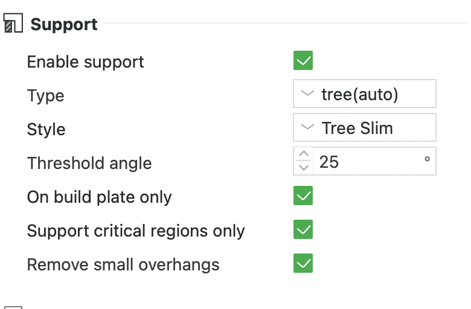
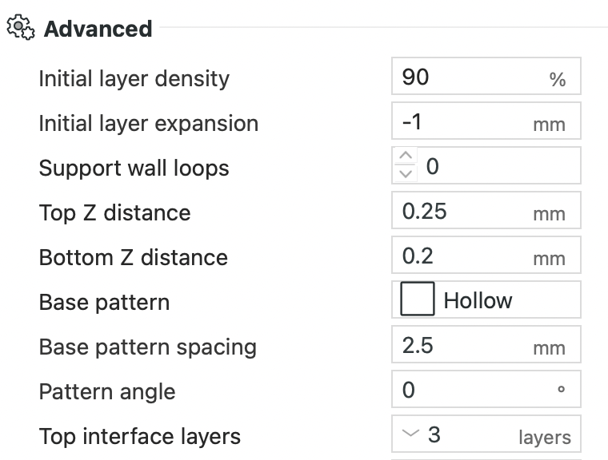
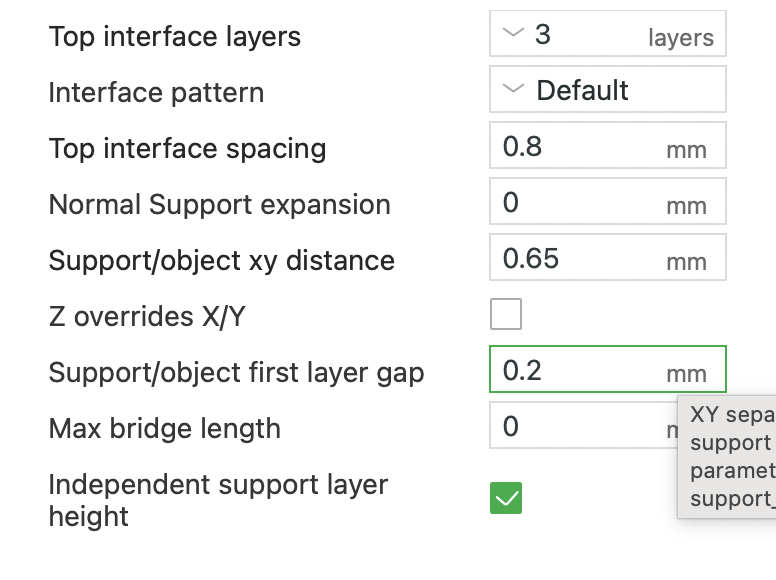

The print finished four hours ago and it is still in the vice. One pair of pliers has already slipped and put a bright crescent scar across the face of the part. The support block is not coming off in one piece, it is coming off in flakes, and every flake takes a little of the model surface with it.
Nothing went wrong. The slicer did exactly what it was told. The problem is that the default support profile is tuned to hold overhangs up reliably, and holding up reliably and letting go cleanly are opposite requirements.
This post is the profile I have settled on in Bambu Studio for a 0.4mm nozzle at 0.16mm layer height, printing PLA on an A1 Mini, and the reasoning behind each value. The settings map straight across to OrcaSlicer, which shares the same support engine. It started from a handful of Reddit threads and then a few months of adjusting one number at a time.
What actually holds a support onto the model
It is tempting to think of support removal as a strength problem, as though the support is glued on and you need enough force to break the glue. That is not what is happening.
A support touches the model in exactly two places. The top of the support column meets the underside of the overhang, and the bottom of the support column meets whatever it is standing on. Everywhere else it is standing in open air. All the effort of removal goes into those two interfaces, and both of them are governed by a gap you set in the slicer.
If that gap is zero, the interface extrusion is laid onto solid plastic that is still warm. It welds. No amount of care with the pliers will separate a weld, so you end up tearing the model surface instead of the support.
If the gap is too large, the interface has nothing under it, sags into the void, and the overhang above prints onto a wavy surface. The support is easy to remove because it barely worked.
Everything below is about landing between those two failures, and about reducing how much support gets generated in the first place.
The support section

Type: tree (auto), Style: Tree Slim. Tree supports touch the model at discrete points rather than under the entire projected footprint. Less contact area is less to break. Tree Slim keeps the branches thin and does not thicken them into the plate-filling structures that Tree Strong produces.
Threshold angle: 25 degrees. Bambu Studio measures this as the slope of the surface away from horizontal, so a vertical wall is 90 degrees, and it generates support where the slope falls below the threshold. Lowering it from the 30 degree default therefore generates less support. You can see the same logic in the stock profiles: the 0.12mm fine profiles ship at 20 degrees and the 0.30mm draft profiles at 40, because a fine layer height holds a shallow overhang that a coarse one drops. At 0.16mm, 25 is the point where a surface prints acceptably without help and is not worth the scar left behind by supporting it. If your geometry has a lot of shallow overhangs that matter cosmetically, put it back up.
On build plate only: enabled. Supports that land on the model itself are the ones that leave the worst marks, because you are prying against a surface rather than against the plate. Turning this on means anything that would need a support standing on the model gets no support at all, so it is a constraint on how you orient the part rather than a free improvement.
Support critical regions only and Remove small overhangs: both enabled. These prune the generated support down to the places that genuinely fail without it. Small isolated overhangs bridge fine and do not justify a branch.
The advanced section

Top Z distance: 0.25mm. Bottom Z distance: 0.2mm. These are the two gaps. Top Z is the air gap between the top of the support and the underside of the model, and it is the number that decides whether removal is a fingernail job or a pliers job. Bottom Z is the gap under the support where it stands on something.
Note what 0.25mm is not: it is not a multiple of the 0.16mm layer height. That matters, and it is dealt with further down.
Support wall loops: 0. A wall loop puts a continuous perimeter around the support body, which turns a stack of loose infill lines into a rigid tube. Rigid is exactly what you do not want. The setting runs from -1 to 2, where -1 is auto and 0 permits infill-only support wherever the support body is thick enough to stand without a wall. That is the case for most tree branches, so the result is a support you can crumble under a thumb.
Initial layer density 90%, initial layer expansion -1mm. The first layer of support is nearly solid, so the thin tree branches have a footing that stays stuck to the plate. Expansion widens that first layer to help adhesion, and the -1 is not a one millimetre shrink, it is the auto value: the slicer sizes the expansion itself. Leave it there unless branches are lifting.
Base pattern: Hollow, spacing 2.5mm, pattern angle 0. Sparse support body, again in the service of weakness.
Top interface layers: 3. The interface is the dense cap at the top of the support that the model prints onto. Fewer than three and the overhang quality drops, because the first sparse layer above a thin interface has too little to sit on. More than three and you are just adding solid material that has to come off later.
Interface spacing and the XY gap

Top interface spacing: 0.8mm. This is the one that surprised me. A solid interface, which is what you get at spacing 0, is a continuous sheet directly under the overhang. It gives the best surface finish and it is the hardest thing in the world to remove. At 0.8mm with a 0.4mm nozzle the interface lines are laid down with roughly a line width of air between them, so the contact with the model above is a series of ridges rather than a plane. Surface finish drops slightly. Removal changes character completely, because there is now somewhere for the break to start.
Support/object XY distance: 0.65mm. The horizontal clearance where a support runs alongside a vertical wall. Too small and the support fuses to the side of the part.
Z overrides X/Y: unchecked. Left off so the XY value stands on its own rather than being derived from the Z gap.
Support/object first layer gap: 0.2mm. The equivalent clearance on the very first layer, where the squish is highest and fusing is most likely.
Max bridge length: 0. This is the longest bridge allowed to print with nothing underneath it. At 0 no bridge counts as self-supporting, so every one of them gets support. It is the only setting in this profile that adds support rather than removing it, and it is deliberate: a sagging bridge is a defect I cannot sand out, whereas the support under it comes off with everything else. Raise it if your parts have long spans that do not need to look good.
Independent support layer height: enabled. Here is the reason 0.25mm works as a top Z distance at a 0.16mm layer height.
Without this option, the support is printed on the same layer grid as the model, so the air gap can only ever be a whole number of layers. At 0.16mm your choices are 0.16mm, which welds, or 0.32mm, which sags. The value you actually want sits between the two and is unreachable. That is why so much support tuning advice ends in "try one layer, then try two" and why neither ever quite works.
With independent support layer height on, the support is free to use its own layer heights, so it can stop wherever it needs to in order to leave the gap you asked for. The gap becomes a real dimension in millimetres rather than a rounded multiple. Tuning support removal is not a matter of finding the right number of layers, it is a matter of getting off the layer grid entirely so that a number in between becomes available.
One caveat, and it is the reason this profile is single colour: the option is ignored when the prime tower is enabled. Turn on a multi-colour print and the supports go back on the model's layer grid, which puts you back to choosing between 0.16mm and 0.32mm.
The values, in one place
| Setting | Value |
|---|---|
| Type | tree (auto) |
| Style | Tree Slim |
| Threshold angle | 25 degrees |
| On build plate only | on |
| Support critical regions only | on |
| Remove small overhangs | on |
| Initial layer density | 90% |
| Initial layer expansion | -1mm |
| Support wall loops | 0 |
| Top Z distance | 0.25mm |
| Bottom Z distance | 0.2mm |
| Base pattern | Hollow |
| Base pattern spacing | 2.5mm |
| Pattern angle | 0 degrees |
| Top interface layers | 3 |
| Interface pattern | Default |
| Top interface spacing | 0.8mm |
| Normal support expansion | 0mm |
| Support/object XY distance | 0.65mm |
| Z overrides X/Y | off |
| Support/object first layer gap | 0.2mm |
| Max bridge length | 0 |
| Independent support layer height | on |
If you change one thing
Change the top Z distance, and change it by 0.01mm at a time.
Every other value on that list shifts the result a little. That one decides whether the support comes off in your hand or comes off with a scalpel, and the useful range on a 0.4mm nozzle is narrow enough that 0.24mm and 0.26mm are genuinely different prints. Get it right for your filament, then leave the rest alone.